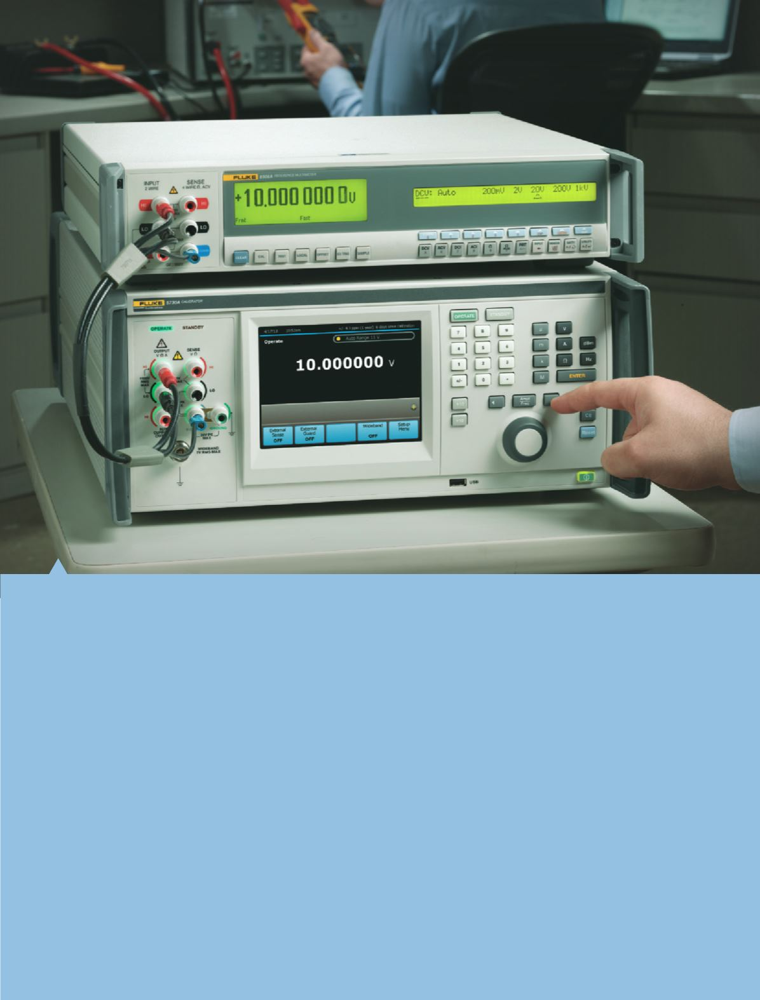

Elektrische Kalibrierung bezieht sich auf den Prozess
der Überprüfung der Leistung von, oder Einstellung
eines Instruments, das elektrische Parameter misst,
erfasst oder testet. Diese Disziplin wird gewöhnlich
als elektrische Gleichstrom-Niederfrequenz- und
Wechselstrom-Hochfrequenzmesstechnik bezeichnet.
Hauptparameter umfassen Spannung, Strom,
Widerstand, Induktivität, Kapazität, Zeit und Frequenz.
Weitere Parameter einschließlich elektrischer
Leistung und Phase sind auch in diesem Segment
der Messtechnik enthalten. Ratiometrische Vergleiche
ähnlicher Parameter werden oftmals durchgeführt, um
einen bekannten Parameter mit einem unbekannten
ähnlichen Parameter zu vergleichen.
Elektrische Kalibrierung umfasst die
Verwendung präziser Geräte, die die Leistung der
Schlüsseleigenschaften für andere Geräte auswerten,
die Prüflinge (UUTs) genannt werden. Da diese
präzisen Geräte im Vergleich zu den Prüflingen (UUT)
über hinreichend bekannte Leistungsmerkmale
verfügen, ist die Leistungsbewertung und/oder
Kalibriereinstellung der Prüflinge (UUT) möglich,
um Fehler zu erkennen oder zu minimieren.
Typischerweise sollte die Leistung solcher
Präzisionsgeräte um das Vierfache oder noch besser
sein als diejenige des Prüflings (UUT).
Diese Präzisionsgeräte lassen sich in zwei große
Kategorien unterteilen. Elektrische Signalquellen
werden häufig als Kalibratoren oder Normale
bezeichnet. Präzisionsmessgeräte werden oftmals
als digitale Referenzmultimeter, Messnormale oder
Verhältnisbrücken klassifiziert.
Elektrische Kalibrierung
2
Elektrische Kalibrierung